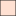

<!doctype html>
<html lang="en">
  <head>
    <meta charset="utf-8" />
    <meta http-equiv="X-UA-Compatible" content="IE=edge" />
    <meta name="viewport" content="initial-scale=1,user-scalable=no,maximum-scale=1,width=device-width" />
    <meta name="mobile-web-app-capable" content="yes" />
    <meta name="apple-mobile-web-app-capable" content="yes" />
    <link rel="stylesheet" href="css/leaflet.css" />
    <link rel="stylesheet" href="css/L.Control.Layers.Tree.css" />
    <link rel="stylesheet" href="css/L.Control.Locate.min.css" />
    <link rel="stylesheet" href="css/qgis2web.css" />
    <link rel="stylesheet" href="css/fontawesome-all.min.css" />
    <link rel="stylesheet" href="css/leaflet.photon.css" />
    <link rel="stylesheet" href="css/leaflet-measure.css" />
    <style>
      html,
      body,
      #map {
        width: 100%;
        height: 100%;
        padding: 0;
        margin: 0;
      }
    </style>
    <title></title>
  </head>
  <body>
    <div id="map"></div>
    <script src="js/qgis2web_expressions.js"></script>
    <script src="js/leaflet.js"></script>
    <script src="js/L.Control.Layers.Tree.min.js"></script>
    <script src="js/L.Control.Locate.min.js"></script>
    <script src="js/leaflet-svg-shape-markers.min.js"></script>
    <script src="js/leaflet.rotatedMarker.js"></script>
    <script src="js/leaflet.pattern.js"></script>
    <script src="js/leaflet-hash.js"></script>
    <script src="js/Autolinker.min.js"></script>
    <script src="js/rbush.min.js"></script>
    <script src="js/labelgun.min.js"></script>
    <script src="js/labels.js"></script>
    <script src="js/leaflet.photon.js"></script>
    <script src="js/leaflet-measure.js"></script>
    <script src="data/Kecamatan_Surakarta_4.js"></script>
    <script src="data/Tempat_Penting_5.js"></script>
    <script>
      var highlightLayer;
      function highlightFeature(e) {
        highlightLayer = e.target;

        if (e.target.feature.geometry.type === "LineString" || e.target.feature.geometry.type === "MultiLineString") {
          highlightLayer.setStyle({
            color: "rgba(255, 255, 0, 1.00)",
          });
        } else {
          highlightLayer.setStyle({
            fillColor: "rgba(255, 255, 0, 1.00)",
            fillOpacity: 0.6,
          });
        }
      }
      var map = L.map("map", {
        zoomControl: false,
        maxZoom: 18,
        minZoom: 1,
      });
      var hash = new L.Hash(map);
      map.attributionControl.setPrefix(
        '<a href="https://github.com/tomchadwin/qgis2web" target="_blank">qgis2web</a> &middot; <a href="https://leafletjs.com" title="A JS library for interactive maps">Leaflet</a> &middot; <a href="https://qgis.org">QGIS</a>',
      );
      var autolinker = new Autolinker({ truncate: { length: 30, location: "smart" } });
      // remove popup's row if "visible-with-data"
      function removeEmptyRowsFromPopupContent(content, feature) {
        var tempDiv = document.createElement("div");
        tempDiv.innerHTML = content;
        var rows = tempDiv.querySelectorAll("tr");
        for (var i = 0; i < rows.length; i++) {
          var td = rows[i].querySelector("td.visible-with-data");
          var key = td ? td.id : "";
          if (td && td.classList.contains("visible-with-data") && feature.properties[key] == null) {
            rows[i].parentNode.removeChild(rows[i]);
          }
        }
        return tempDiv.innerHTML;
      }
      // modify popup if contains media
      function addClassToPopupIfMedia(content, popup) {
        var tempDiv = document.createElement("div");
        tempDiv.innerHTML = content;
        var imgTd = tempDiv.querySelector("td img");
        if (imgTd) {
          var src = imgTd.getAttribute("src");
          if (/\.(jpg|jpeg|png|gif|bmp|webp|avif)$/i.test(src)) {
            popup._contentNode.classList.add("media");
            setTimeout(function () {
              popup.update();
            }, 10);
          } else if (/\.(mp3|wav|ogg|aac)$/i.test(src)) {
            var audio = document.createElement("audio");
            audio.controls = true;
            audio.src = src;
            imgTd.parentNode.replaceChild(audio, imgTd);
            popup._contentNode.classList.add("media");
            setTimeout(function () {
              popup.setContent(tempDiv.innerHTML);
              popup.update();
            }, 10);
          } else if (/\.(mp4|webm|ogg|mov)$/i.test(src)) {
            var video = document.createElement("video");
            video.controls = true;
            video.src = src;
            video.style.width = "400px";
            video.style.height = "300px";
            video.style.maxHeight = "60vh";
            video.style.maxWidth = "60vw";
            imgTd.parentNode.replaceChild(video, imgTd);
            popup._contentNode.classList.add("media");
            // Aggiorna il popup quando il video carica i metadati
            video.addEventListener("loadedmetadata", function () {
              popup.update();
            });
            setTimeout(function () {
              popup.setContent(tempDiv.innerHTML);
              popup.update();
            }, 10);
          } else {
            popup._contentNode.classList.remove("media");
          }
        } else {
          popup._contentNode.classList.remove("media");
        }
      }
      var zoomControl = L.control
        .zoom({
          position: "topleft",
        })
        .addTo(map);
      L.control.locate({ locateOptions: { maxZoom: 19 } }).addTo(map);
      var measureControl = new L.Control.Measure({
        position: "topleft",
        primaryLengthUnit: "meters",
        secondaryLengthUnit: "kilometers",
        primaryAreaUnit: "sqmeters",
        secondaryAreaUnit: "hectares",
      });
      measureControl.addTo(map);
      document.getElementsByClassName("leaflet-control-measure-toggle")[0].innerHTML = "";
      document.getElementsByClassName("leaflet-control-measure-toggle")[0].className += " fas fa-ruler";
      var bounds_group = new L.featureGroup([]);
      function setBounds() {
        if (bounds_group.getLayers().length) {
          map.fitBounds(bounds_group.getBounds());
        }
      }
      map.createPane("pane_DarkMatter_0");
      map.getPane("pane_DarkMatter_0").style.zIndex = 400;
      var layer_DarkMatter_0 = L.tileLayer("https://a.basemaps.cartocdn.com/dark_all/{z}/{x}/{y}.png", {
        pane: "pane_DarkMatter_0",
        opacity: 1.0,
        attribution: '<a href="https://cartodb.com/basemaps/">Map tiles by CartoDB, under CC BY 3.0. Data by OpenStreetMap, under ODbL.</a>',
        minZoom: 1,
        maxZoom: 15,
        minNativeZoom: 0,
        maxNativeZoom: 20,
      });
      layer_DarkMatter_0;
      map.addLayer(layer_DarkMatter_0);
      map.createPane("pane_GoogleMap_1");
      map.getPane("pane_GoogleMap_1").style.zIndex = 401;
      var layer_GoogleMap_1 = L.tileLayer("https://mt1.google.com/vt/lyrs=r&x={x}&y={y}&z={z}", {
        pane: "pane_GoogleMap_1",
        opacity: 1.0,
        attribution: "",
        minZoom: 1,
        maxZoom: 15,
        minNativeZoom: 0,
        maxNativeZoom: 18,
      });
      layer_GoogleMap_1;
      map.addLayer(layer_GoogleMap_1);
      map.createPane("pane_ESRISatellite_2");
      map.getPane("pane_ESRISatellite_2").style.zIndex = 402;
      var layer_ESRISatellite_2 = L.tileLayer("https://server.arcgisonline.com/ArcGIS/rest/services/World_Imagery/MapServer/tile/{z}/{y}/{x}", {
        pane: "pane_ESRISatellite_2",
        opacity: 1.0,
        attribution: "",
        minZoom: 1,
        maxZoom: 15,
        minNativeZoom: 0,
        maxNativeZoom: 20,
      });
      layer_ESRISatellite_2;
      map.addLayer(layer_ESRISatellite_2);
      map.createPane("pane_OpenStreetMap_3");
      map.getPane("pane_OpenStreetMap_3").style.zIndex = 403;
      var layer_OpenStreetMap_3 = L.tileLayer("https://tile.openstreetmap.org/{z}/{x}/{y}.png", {
        pane: "pane_OpenStreetMap_3",
        opacity: 1.0,
        attribution: "",
        minZoom: 1,
        maxZoom: 15,
        minNativeZoom: 0,
        maxNativeZoom: 19,
      });
      layer_OpenStreetMap_3;
      map.addLayer(layer_OpenStreetMap_3);
      function pop_Kecamatan_Surakarta_4(feature, layer) {
        var infoKecamatan = {
          Jebre: {
            foto: "images/jebre.jpeg",
            deskripsi:
              "Kecamatan Selo terletak di antara Gunung Merapi dan Gunung Merbabu di Kabupaten Boyolali. Wilayah ini memiliki udara sejuk dan didominasi kawasan pegunungan. Selo dikenal sebagai jalur pendakian Gunung Merapi (New Selo) serta memiliki potensi wisata alam yang tinggi. Mayoritas penduduk bekerja di sektor pertanian dengan komoditas sayuran dataran tinggi.",
          },
        };
        layer.on({
          mouseout: function (e) {
            for (var i in e.target._eventParents) {
              if (typeof e.target._eventParents[i].resetStyle === "function") {
                e.target._eventParents[i].resetStyle(e.target);
              }
            }
          },
          mouseover: highlightFeature,
        });

        var nama = feature.properties["NAMOBJ"] || "-";
        var luas = feature.properties["SHAPE_Area"];
        var penduduk = feature.properties["JMPENDUDUK"] || "-";
        var kepadatan = feature.properties["KEPENDUDUK"] || "-";
        var kategori = feature.properties["kategori"] || "-";
        var gambar = "images/default.jpeg";
        var kep = feature.properties["KEPENDUDUK"];
        var kategori = feature.properties["kategori"];

        // mapping gambar tiap kecamatan
        if (nama === "Banjarsari") {
          gambar = "images/banjarsari.jpeg";
        } else if (nama === "Laweyan") {
          gambar = "images/laweyan.jpeg";
        } else if (nama === "Serengan") {
          gambar = "images/serengan.jpeg";
        } else if (nama === "Pasar Kliwon") {
          gambar = "images/pasarkliwon.jpeg";
        } else if (nama === "Jebres") {
          gambar = "images/jebres.jpeg";
        }
        if (nama === "Banjarsari") {
          deskripsi = "Banjarsari merupakan pusat perdagangan dan aktivitas ekonomi di Kota Surakarta.";
        } else if (nama === "Laweyan") {
          deskripsi = "Laweyan dikenal sebagai kawasan batik terkenal dengan nilai sejarah tinggi.";
        } else if (nama === "Serengan") {
          deskripsi = "Serengan merupakan wilayah dengan kepadatan penduduk tinggi dan aktivitas permukiman dominan.";
        } else if (nama === "Pasar Kliwon") {
          deskripsi = "Pasar Kliwon dikenal sebagai pusat perdagangan tekstil dan kawasan komunitas Arab.";
        } else if (nama === "Jebres") {
          deskripsi = "Jebres merupakan kawasan pendidikan dengan keberadaan Universitas Sebelas Maret.";
        }
        if (!kategori) {
          if (kep <= 11000) kategori = "Rendah";
          else if (kep <= 15000) kategori = "Sedang";
          else kategori = "Tinggi";
        }
        var popupContent = `
        <div style="width:250px">
            <h3>${nama}</h3>

            

            <p style ="font-size:13px;">${deskripsi}</p>

            <table style="font-size:13px;">
                <tr><td>Luas</td><td>${luas} km²</td></tr>
<tr><td>Jumlah Penduduk</td><td>${penduduk} jiwa</td></tr>
<tr><td>Kepadatan</td><td>${kepadatan} jiwa/km²</td></tr>
                <tr><td>Kategori</td><td>${kategori}</td></tr>
            </table>
        </div>
    `;

        layer.bindPopup(popupContent);
      }

      function style_Kecamatan_Surakarta_4_0(feature) {
        if (feature.properties["KEPENDUDUK"] >= 0.0 && feature.properties["KEPENDUDUK"] <= 11000.0) {
          return {
            pane: "pane_Kecamatan_Surakarta_4",
            opacity: 1,
            color: "rgba(35,35,35,0.65)",
            dashArray: "",
            lineCap: "butt",
            lineJoin: "miter",
            weight: 1.0,
            fill: true,
            fillOpacity: 1,
            fillColor: "rgba(254,224,210,0.65)",
            interactive: true,
          };
        }
        if (feature.properties["KEPENDUDUK"] >= 11000.0 && feature.properties["KEPENDUDUK"] <= 15000.0) {
          return {
            pane: "pane_Kecamatan_Surakarta_4",
            opacity: 1,
            color: "rgba(35,35,35,0.65)",
            dashArray: "",
            lineCap: "butt",
            lineJoin: "miter",
            weight: 1.0,
            fill: true,
            fillOpacity: 1,
            fillColor: "rgba(252,146,114,0.65)",
            interactive: true,
          };
        }
        if (feature.properties["KEPENDUDUK"] >= 15000.0 && feature.properties["KEPENDUDUK"] <= 20000.0) {
          return {
            pane: "pane_Kecamatan_Surakarta_4",
            opacity: 1,
            color: "rgba(35,35,35,0.65)",
            dashArray: "",
            lineCap: "butt",
            lineJoin: "miter",
            weight: 1.0,
            fill: true,
            fillOpacity: 1,
            fillColor: "rgba(239,59,44,0.65)",
            interactive: true,
          };
        }
      }
      map.createPane("pane_Kecamatan_Surakarta_4");
      map.getPane("pane_Kecamatan_Surakarta_4").style.zIndex = 404;
      map.getPane("pane_Kecamatan_Surakarta_4").style["mix-blend-mode"] = "normal";
      var layer_Kecamatan_Surakarta_4 = new L.geoJson(json_Kecamatan_Surakarta_4, {
        attribution: "",
        interactive: true,
        dataVar: "json_Kecamatan_Surakarta_4",
        layerName: "layer_Kecamatan_Surakarta_4",
        pane: "pane_Kecamatan_Surakarta_4",
        onEachFeature: pop_Kecamatan_Surakarta_4,
        style: style_Kecamatan_Surakarta_4_0,
      });
      bounds_group.addLayer(layer_Kecamatan_Surakarta_4);
      map.addLayer(layer_Kecamatan_Surakarta_4);

      function pop_Tempat_Penting_5(feature, layer) {
        var lat = parseFloat(feature.geometry.coordinates[1]).toFixed(6);
        var lng = parseFloat(feature.geometry.coordinates[0]).toFixed(6);

        var userLat = localStorage.getItem("userLat");
        var userLng = localStorage.getItem("userLng");

        let url;

        if (userLat && userLng) {
          url = `https://www.google.com/maps/dir/?api=1&origin=${userLat},${userLng}&destination=${lat},${lng}&travelmode=driving&dir_action=navigate`;
        } else {
          url = `https://www.google.com/maps/dir/?api=1&destination=${lat},${lng}`;
        }
        // ambil lokasi user
        if (navigator.geolocation) {
          navigator.geolocation.getCurrentPosition(function (position) {
            var userLat = position.coords.latitude.toFixed(6);
            var userLng = position.coords.longitude.toFixed(6);

            url = `https://www.google.com/maps/dir/?api=1&origin=${userLat},${userLng}&destination=${lat},${lng}&travelmode=driving`;
          });
        }
        var popupContent =
          '<div style="text-align:center;">' +
          "<b>" +
          (feature.properties["NAMA"] || "Tempat") +
          "</b><br><br>" +
          '<a href="' +
          url +
          '" target="_blank" ' +
          'style="display:inline-block; padding:6px 10px; background:#4285F4; color:white; border-radius:6px; text-decoration:none;">' +
          " Buka Rute di Google Maps</a>" +
          "</div>";

        layer.on({
          mouseout: function (e) {
            for (var i in e.target._eventParents) {
              if (typeof e.target._eventParents[i].resetStyle === "function") {
                e.target._eventParents[i].resetStyle(e.target);
              }
            }
          },
          mouseover: highlightFeature,
        });

        var content = removeEmptyRowsFromPopupContent(popupContent, feature);
        layer.on("popupopen", function (e) {
          addClassToPopupIfMedia(content, e.popup);
        });
        layer.bindPopup(content, { maxHeight: 400 });
      }

      function style_Tempat_Penting_5_0(feature) {
        switch (String(feature.properties["id"])) {
          case "1":
            return {
              pane: "pane_Tempat_Penting_5",
              shape: "diamond",
              radius: 8.0,
              opacity: 1,
              color: "rgba(50,87,128,1.0)",
              dashArray: "",
              lineCap: "butt",
              lineJoin: "miter",
              weight: 2.0,
              fill: true,
              fillOpacity: 1,
              fillColor: "rgba(0,0,0,1.0)",
              interactive: true,
            };
            break;
          case "2":
            return {
              pane: "pane_Tempat_Penting_5",
              shape: "diamond",
              radius: 8.8,
              opacity: 1,
              color: "rgba(61,128,53,1.0)",
              dashArray: "",
              lineCap: "butt",
              lineJoin: "miter",
              weight: 2.0,
              fill: true,
              fillOpacity: 1,
              fillColor: "rgba(255,153,22,1.0)",
              interactive: true,
            };
            break;
          case "3":
            return {
              pane: "pane_Tempat_Penting_5",
              shape: "triangle",
              radius: 8.0,
              opacity: 1,
              color: "rgba(61,128,53,1.0)",
              dashArray: "",
              lineCap: "butt",
              lineJoin: "miter",
              weight: 2.0,
              fill: true,
              fillOpacity: 1,
              fillColor: "rgba(84,176,74,1.0)",
              interactive: true,
            };
            break;
          case "4":
            return {
              pane: "pane_Tempat_Penting_5",
              shape: "triangle",
              radius: 8.0,
              opacity: 1,
              color: "rgba(128,17,25,1.0)",
              dashArray: "",
              lineCap: "butt",
              lineJoin: "miter",
              weight: 2.0,
              fill: true,
              fillOpacity: 1,
              fillColor: "rgba(219,30,42,1.0)",
              interactive: true,
            };
            break;
        }
      }
      map.createPane("pane_Tempat_Penting_5");
      map.getPane("pane_Tempat_Penting_5").style.zIndex = 405;
      map.getPane("pane_Tempat_Penting_5").style["mix-blend-mode"] = "normal";
      var layer_Tempat_Penting_5 = new L.geoJson(json_Tempat_Penting_5, {
        attribution: "",
        interactive: true,
        dataVar: "json_Tempat_Penting_5",
        layerName: "layer_Tempat_Penting_5",
        pane: "pane_Tempat_Penting_5",
        onEachFeature: pop_Tempat_Penting_5,
        pointToLayer: function (feature, latlng) {
          var context = {
            feature: feature,
            variables: {},
          };
          return L.shapeMarker(latlng, style_Tempat_Penting_5_0(feature));
        },
      });
      bounds_group.addLayer(layer_Tempat_Penting_5);
      map.addLayer(layer_Tempat_Penting_5);
      const url = { "Nominatim OSM": "https://nominatim.openstreetmap.org/search?format=geojson&addressdetails=1&", "France BAN": "https://api-adresse.data.gouv.fr/search/?" };
      var photonControl = L.control
        .photon({
          url: url["Nominatim OSM"],
          feedbackLabel: "",
          position: "topleft",
          includePosition: true,
          initial: true,
          // resultsHandler: myHandler,
        })
        .addTo(map);
      photonControl._container.childNodes[0].style.borderRadius = "10px";
      // Create a variable to store the geoJSON data
      var x = null;
      // Create a variable to store the marker
      var marker = null;
      // Add an event listener to the Photon control to create a marker from the returned geoJSON data
      var z = null;
      photonControl.on("selected", function (e) {
        console.log(photonControl.search.resultsContainer);
        if (x != null) {
          map.removeLayer(obj3.marker);
          map.removeLayer(x);
        }
        obj2.gcd = e.choice;
        x = L.geoJSON(obj2.gcd).addTo(map);
        var label = typeof obj2.gcd.properties.label === "undefined" ? obj2.gcd.properties.display_name : obj2.gcd.properties.label;
        obj3.marker = L.marker(x.getLayers()[0].getLatLng()).bindPopup(label).addTo(map);
        map.setView(x.getLayers()[0].getLatLng(), 17);
        z = typeof e.choice.properties.label === "undefined" ? e.choice.properties.display_name : e.choice.properties.label;
        console.log(e);
        e.target.input.value = z;
      });
      var search = document.getElementsByClassName("leaflet-photon leaflet-control")[0];
      search.classList.add("leaflet-control-search");
      search.style.display = "flex";
      search.style.backgroundColor = "rgba(255,255,255,0.5)";

      // Create the new button element
      var button = document.createElement("div");
      button.id = "gcd-button-control";
      button.className = "gcd-gl-btn fa fa-search search-button";

      // Insert the button at the beginning of the search control
      search.insertBefore(button, search.firstChild);
      last = search.lastChild;
      last.style.display = "none";
      button.addEventListener("click", function (e) {
        if (last.style.display === "none") {
          last.style.display = "block";
        } else {
          last.style.display = "none";
        }
      });
      var overlaysTree = [
        {
          label:
            'Tempat_Penting<br /><table><tr><td style="text-align: center;"></td><td>Kecamatan</td></tr><tr><td style="text-align: center;"></td><td>Kelurahan</td></tr><tr><td style="text-align: center;"></td><td>Puskesmas</td></tr><tr><td style="text-align: center;"></td><td>Rumah Sakit</td></tr></table>',
          layer: layer_Tempat_Penting_5,
        },
        {
          label:
            'Kecamatan_Surakarta<br /><table><tr><td style="text-align: center;"></td><td>Rendah</td></tr><tr><td style="text-align: center;"></td><td>Sedang</td></tr><tr><td style="text-align: center;"></td><td>Tinggi</td></tr></table>',
          layer: layer_Kecamatan_Surakarta_4,
        },
        { label: "OpenStreetMap", layer: layer_OpenStreetMap_3 },
        { label: "ESRI Satellite", layer: layer_ESRISatellite_2 },
        { label: "Google Map", layer: layer_GoogleMap_1 },
        { label: "Dark Matter", layer: layer_DarkMatter_0 },
      ];
      var lay = L.control.layers.tree(null, overlaysTree, {
        collapsed: false,
      });
      lay.addTo(map);
      document.addEventListener("DOMContentLoaded", function () {
        // set new Layers List height which considers toggle icon
        function newLayersListHeight() {
          var layerScrollbarElement = document.querySelector(".leaflet-control-layers-scrollbar");
          if (layerScrollbarElement) {
            var layersListElement = document.querySelector(".leaflet-control-layers-list");
            var originalHeight = layersListElement.style.height || window.getComputedStyle(layersListElement).height;
            var newHeight = parseFloat(originalHeight) - 50;
            layersListElement.style.height = newHeight + "px";
          }
        }
        var isLayersListExpanded = true;
        var controlLayersElement = document.querySelector(".leaflet-control-layers");
        var toggleLayerControl = document.querySelector(".leaflet-control-layers-toggle");
        // toggle Collapsed/Expanded and apply new Layers List height
        toggleLayerControl.addEventListener("click", function () {
          if (isLayersListExpanded) {
            controlLayersElement.classList.remove("leaflet-control-layers-expanded");
          } else {
            controlLayersElement.classList.add("leaflet-control-layers-expanded");
          }
          isLayersListExpanded = !isLayersListExpanded;
          newLayersListHeight();
        });
        // apply new Layers List height if toggle layerstree
        if (controlLayersElement) {
          controlLayersElement.addEventListener("click", function (event) {
            var toggleLayerHeaderPointer = event.target.closest(".leaflet-layerstree-header-pointer span");
            if (toggleLayerHeaderPointer) {
              newLayersListHeight();
            }
          });
        }
        // Collapsed/Expanded at Start to apply new height
        setTimeout(function () {
          toggleLayerControl.click();
        }, 10);
        setTimeout(function () {
          toggleLayerControl.click();
        }, 10);
        // Collapsed touch/small screen
        var isSmallScreen = window.innerWidth < 650;
        if (isSmallScreen) {
          setTimeout(function () {
            controlLayersElement.classList.remove("leaflet-control-layers-expanded");
            isLayersListExpanded = !isLayersListExpanded;
          }, 500);
        }
      });
      setBounds();
    </script>
  </body>
</html>
